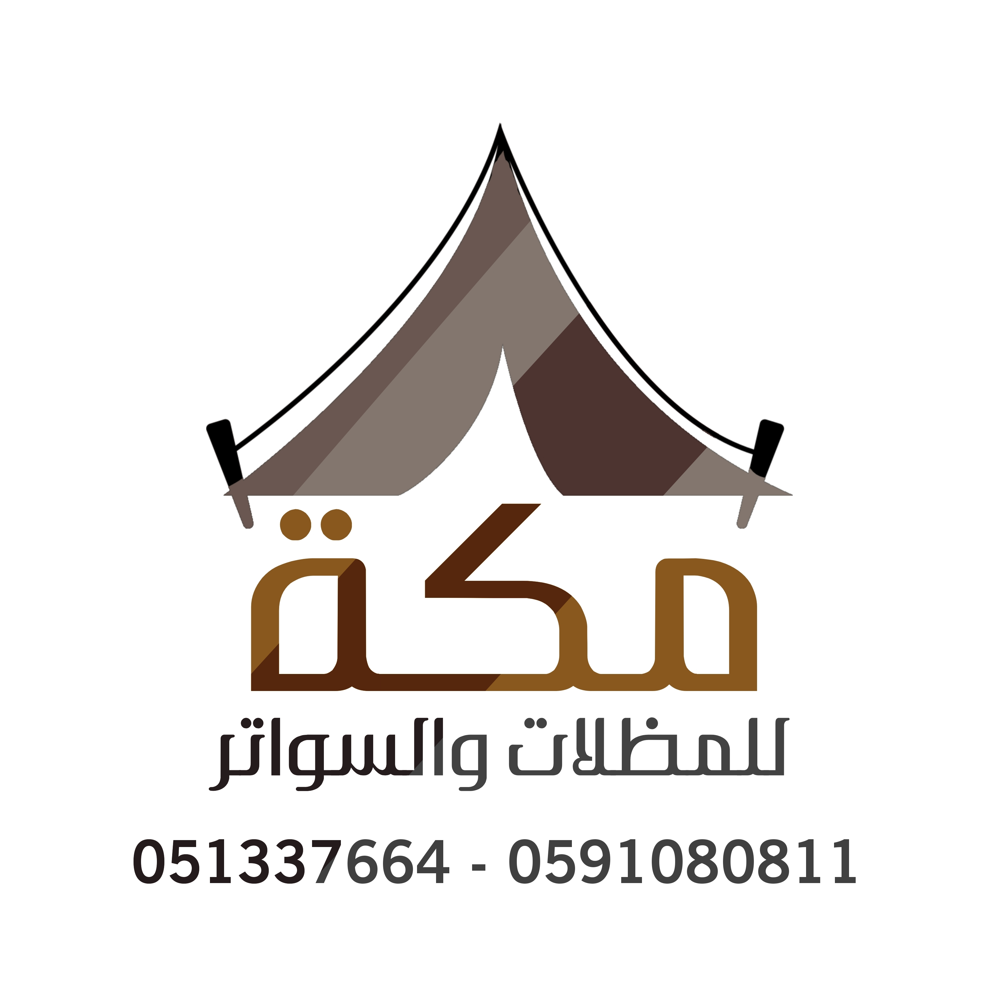

من نحن

نسعد بخدمتكم
مكة للسواتر والمظلات هي فريق متخصص في توفير أفضل أنواع المظلات ذات الجودة العالية والتي يحتاجها أصحاب المطاعم والمقاهي وكذلك المنازل لتوفير الظل حول المنزل أو فوق الأسطح للحماية من تأثير أشعة الشمس الشديد، ونحن نوفر لك مظلات ذات أشكال عصرية حديثة وبأسعار رخيصة.
أنواع مظلات مكة
- مظلات PVC وهذا النوع من المظلات يتم صنعه من الأقمشة عالية الجودة، بحيث يتم صنعه من الأقمشة الورية أو الألمانية.
- تركيب مظلات كابولي التي تعد من أفضل أنواع مظلات السيارات، والتي تساعد في حماية السيارة من تأثير أشعة الشمس عليها.
- المظلات المصنوعة من ألواح البولي كبرونيت التي تتحمل الصدمات المختلفة والعوامل الجوية المختلفة.
- تصميم البرجولات الخشبية التي تصنع من أجود أنواع الأخشاب، ويتوفر فيها شرائح من الخشب المجدول.
- صناعة سواتر من الحديد التي تتشكل في هيئة شرائح.